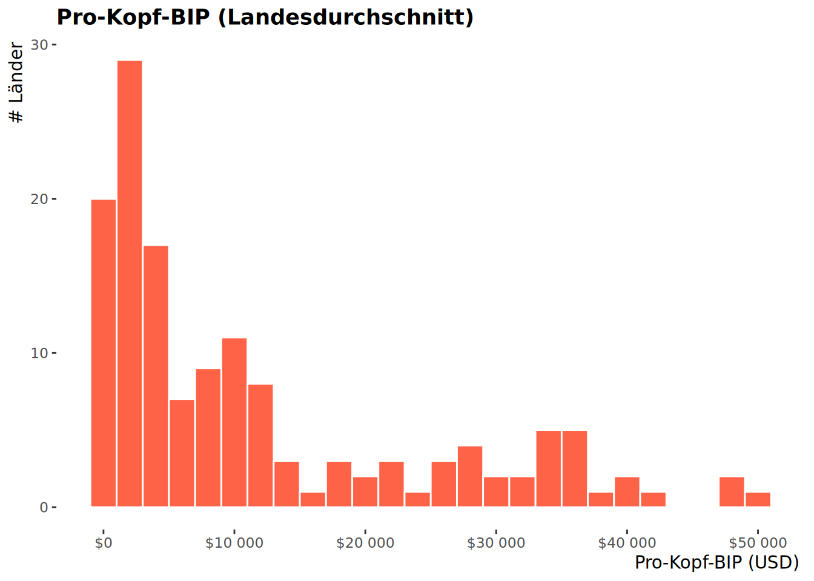
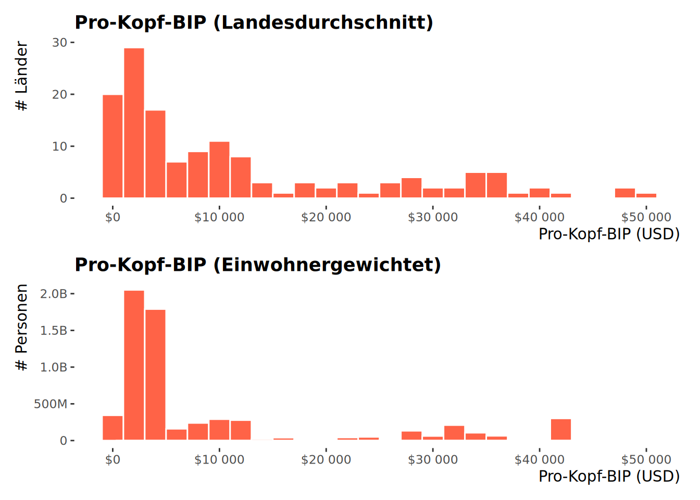

Visualisierung
Globale Entwicklung, 1952 - 2007
| country | continent | year | lifeExp | pop | gdpPercap |
|---|---|---|---|---|---|
| Afghanistan | Asia | 1952 | 28.801 | 8425333 | 779.4453 |
| Afghanistan | Asia | 1957 | 30.332 | 9240934 | 820.8530 |
| Afghanistan | Asia | 1962 | 31.997 | 10267083 | 853.1007 |
| Afghanistan | Asia | 1967 | 34.020 | 11537966 | 836.1971 |
| Afghanistan | Asia | 1972 | 36.088 | 13079460 | 739.9811 |
| Afghanistan | Asia | 1977 | 38.438 | 14880372 | 786.1134 |
| Afghanistan | Asia | 1982 | 39.854 | 12881816 | 978.0114 |
| Afghanistan | Asia | 1987 | 40.822 | 13867957 | 852.3959 |
| Afghanistan | Asia | 1992 | 41.674 | 16317921 | 649.3414 |
| Afghanistan | Asia | 1997 | 41.763 | 22227415 | 635.3414 |
Gapminder (eine schwedische Stiftung) aggregiert Daten zur weltweiten wirtschaftlichen Entwicklung, Bevölkerung und Lebenserwartung über einen Zeitraum von > 50 Jahren.
country: Land (insgesamt 142 Länder)continent: Africa, Americas, Asia, Europe, Oceaniayear: Beobachtungsjahr (1952-2007, in 5-Jahre Schritten)lifeExp: Mittlere Lebenserwartung bei Geburt (in Jahren)pop: BevöklerunggdpPercap: Pro-Kopf-BIP (in US-$, inflationsangepasst)Vorteile
Nachteile
Vorteile
Nachteile
I.d.R. Säulendiagramm bevorzugen

0 | 2000 | 4000 | 6000 | …
0 | 2000 | 4000 | 6000 | …

0 | 2000 | 4000 | 6000 | …